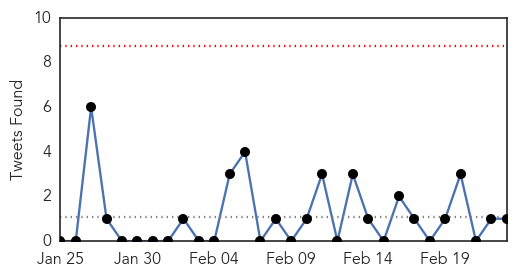
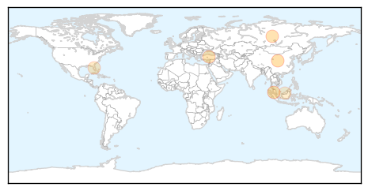

Unknown
30-Day Web Trend
1 alerts, 0 warnings

30-Day Twitter Trend
0 alerts, 0 warnings

Article Locations

Article Confidences

Top Articles:
- 0.997
- U.N. experts warn of 'critical knowledge gaps' on Saudi MERS virus
- 0.992
- Deadly Superbug Outbreak In North Carolina Hospital
- 0.973
- DOH allays bird flu fears after OFW from China dies
- 0.953
- New Virus Kansas: CDC Discovers New Tick-Borne Virus In Kansas : Home : Jobs & Hire
- 0.946
- The most from the coast
- 0.945
- Pinoy musician, 52, possibly died of bird flu; PH remains free of the disease
- 0.934
- Superbug strikes again, killing two in North Carolina
- 0.933
- That mysterious virus that killed Kansas man? Never seen before: CDC
- 0.924
- Editorial: UCLA must be transparent about superbug investigation
- 0.918
- Over 100 Sick on Celebrity Equinox
- 0.917
- Chicago Tribune
- 0.917
- Chicago Tribune
- 0.917
- Chicago Tribune
- 0.917
- Chicago Tribune
- 0.917
- Chicago Tribune
- 0.917
- Chicago Tribune
- 0.917
- Chicago Tribune
- 0.917
- Chicago Tribune
- 0.917
- Chicago Tribune
- 0.917
- Chicago Tribune
- 0.917
- Chicago Tribune
- 0.917
- Chicago Tribune
- 0.917
- Chicago Tribune
- 0.917
- Chicago Tribune
- 0.917
- Chicago Tribune
- 0.917
- Chicago Tribune
- 0.917
- Chicago Tribune
- 0.917
- Chicago Tribune
- 0.917
- Chicago Tribune
- 0.917
- Chicago Tribune
- 0.917
- Chicago Tribune
- 0.917
- Chicago Tribune
- 0.917
- Chicago Tribune
- 0.914
- WBTV 3 News, Weather, Sports, and Traffic for Charlotte, NC
- 0.866
- CRE superbug leaves 2 dead and 16 hospitalized in North Carolina
- 0.856
- Suspected norovirus outbreak sickens 120 people in Taiwan
- 0.848
- U.S. lawmaker seeks congressional hearing on ‘superbug’ outbreak
- 0.847
- What You Should Know About ‘Superbug’ CRE
- 0.840
- Media Advisory-CDC and Partners Investigate Newly Discovered Virus
- 0.816
- Respiratory virus season in Armenia
- 0.811
- Newly Discovered Virus Linked to Death of Kansas Man
- 0.780
- Superbug spreading in North Carolina, one dead
- 0.778
- Superbug Kills 2 in Charlotte, North Carolina
- 0.753
- 1 dead after superbug cases reported in North Carolina
- 0.748
- Margao sees 50% decline in malaria cases
- 0.736
- First tests clear 100 of TB at childcare centre
- 0.733
- Most HIV Infections Come From Undiagnosed or Untreated People
- 0.706
- Health Beat: Is Your Hospital Making You Sicker?
- 0.705
- CRE superbug spreads to North Carolina, kills two
- 0.664
- HIV Cure News and Updates: A New HIV Strain has been Discovered in Cuba - Crossmap Christian News
Showing top 50 articles...
Top Tweets:
- 0.661
- Today's 4 MERS cases & 1 death bring KSA's totals for Feb to 60 cases, 24 deaths. Staggering numbers in absence of large hospital outbreak
- 0.654
- Los trabajos en grupo muestran fuertemente el carácter de las personas.
- 0.601
- La gente se toma muy en serio lo que otra publica en las redes.
- 0.545
- RT: Cínico: un hombre que sabe el precio de todo y el valor de nada.
- 0.540
- Progress in Haiti since 2010 earthquake: clean water, HIV prevention, immunization, public health capacity. http://t.co/zMX4yLVp4l
- 0.540
- Progress in Haiti since 2010 earthquake: clean water, HIV prevention, immunization, public health capacity. http://t.co/TfMIQB4Aio
- 0.501
- RT: Progress in Haiti since 2010 earthquake: clean water, HIV prevention, immunization, public health capacity. http://t.co/…
- 0.501
- RT: Progress in Haiti since 2010 earthquake: clean water, HIV prevention, immunization, public health capacity. http://t.co/…
Dengue Fever
30-Day Web Trend
8 alerts, 2 warnings

30-Day Twitter Trend
0 alerts, 0 warnings

Article Locations
Article Confidences
Top Articles:
- 0.976
- Declare national emergency in combating dengue pandemic ― Charles Santiago
- 0.975
- Dengue situation in coastal town described as alarming - Nation
- 0.901
- Revealed: Holiday hotspots included in world's most dangerous destinations to fall ill
- 0.897
- Revealed: World's most dangerous places to fall ill
- 0.675
- Genetically Modified Mosquitoes Have Few Proven Benefits, Too Many Risks
- 0.591
- Reducing Mosquitoes Is Vital to Human Health
Top Tweets:
-
No tweets found for Feb 23, 2015